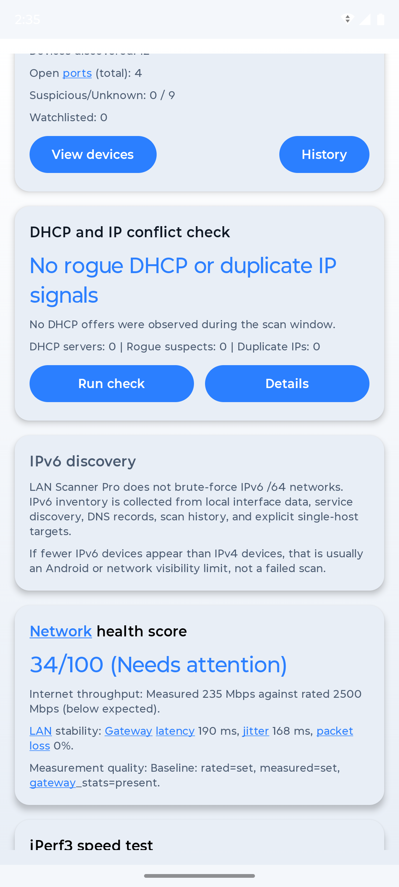
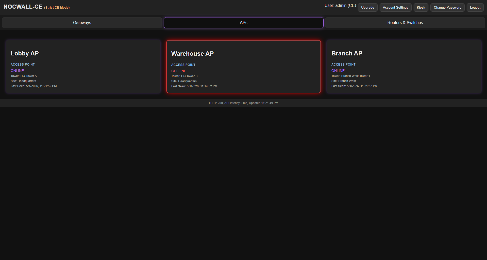
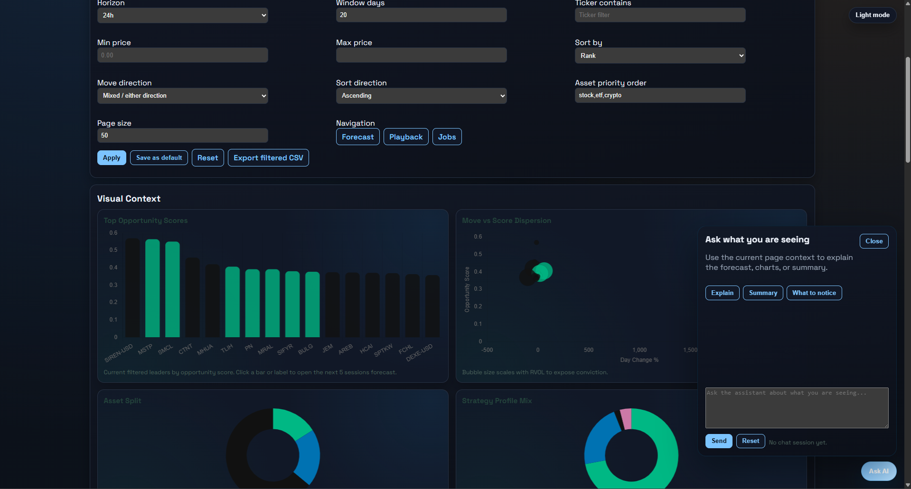

Failures surface too late
You do not know something is down until a user, customer, or field tech complains.
I design and build network monitoring, automation, internal applications, and reporting systems for MSPs, WISPs, IT teams, and growing businesses.
The goal is not to add software for its own sake. The goal is clearer operations, fewer blind spots, and tools that match how the business actually runs.
You do not know something is down until a user, customer, or field tech complains.
Staff copy information between sheets, email, chat, billing tools, and systems that do not share status clearly.
The data exists, but nobody has a reliable operational view of trends, bottlenecks, outages, or workload.
The existing software solves part of the problem, but the missing integration or workflow creates extra work.
Services are scoped around the business problem, existing systems, operational risk, integrations, and the support path required after launch.
For teams that need fewer blind spots, faster incident response, and less repetitive checking across infrastructure.
Discuss monitoringReplace spreadsheet-heavy, email-driven, or fragmented workflows with software that matches the company's real process.
Discuss an internal appTurn spreadsheets, databases, APIs, monitoring platforms, and business systems into views people can act on.
Discuss reportingSupporting capabilities include mobile development, integrations, advanced analytics, machine learning where it fits the actual problem, and small-business websites when they support the operational goal.
These examples are described by maturity: public release, private alpha product development, and anonymized commissioned client work.

Local-first network discovery, device history, topology-related workflows, reporting, and operator-focused tooling.
LAN Scanner Pro Discord
Wallboards, telemetry, topology, edge-agent concepts, alerts, APIs, and deployment tooling for network-operations workflows.

FastAPI application with scheduled workers, data pipelines, authentication, dashboards, databases, and deployment automation for decision-support research.
Larger or uncertain projects may begin with a paid assessment or discovery engagement so scope, risk, and handoff are clear before implementation.
Understand the problem, users, systems, constraints, and desired business or operational outcome.
Define deliverables, boundaries, milestones, risks, cost, integrations, and support expectations.
Implement in visible increments with demonstrations, documented decisions, and reviewable progress.
Deploy, verify, document, hand off, and provide an appropriate support path after launch.
Projects are scoped around the business problem, integrations, operational risk, and support requirements. A small business website is available when that is the right tool, but it is not the whole practice.
Clarify systems, users, risks, workflows, and options before committing to a build.
Build a defined internal app, monitoring workflow, dashboard, integration, automation, or reporting system.
Continue improving the system after launch with fixes, features, documentation, and support paths.
Aryn Sparks is an independent software consultant and contract engineer focused on infrastructure-aware software for teams that need operational clarity.
Public work shows reusable library design, packaging, documentation, testing, deterministic behavior, developer tooling, networking knowledge, and follow-through.
Image-to-NumPy conversion for computer vision, ML preprocessing, notebooks, and data pipelines.
Lightweight diagnostics work that reflects the operational side of software: visibility, supportability, and troubleshooting.
Reusable value mapping and normalization utility for data, graphics, and deterministic transformation workflows.
See the broader portfolio of public libraries, sites, experiments, and implementation notes.
These projects show curiosity and technical range, but they remain secondary to the consulting services above.
We can start with a short conversation to determine whether the problem needs custom software, automation, better monitoring, or simply a clearer technical plan.
Best-fit conversations involve monitoring, automation, dashboards, internal tools, reporting, network-aware software, or systems that need a clearer plan before build-out.